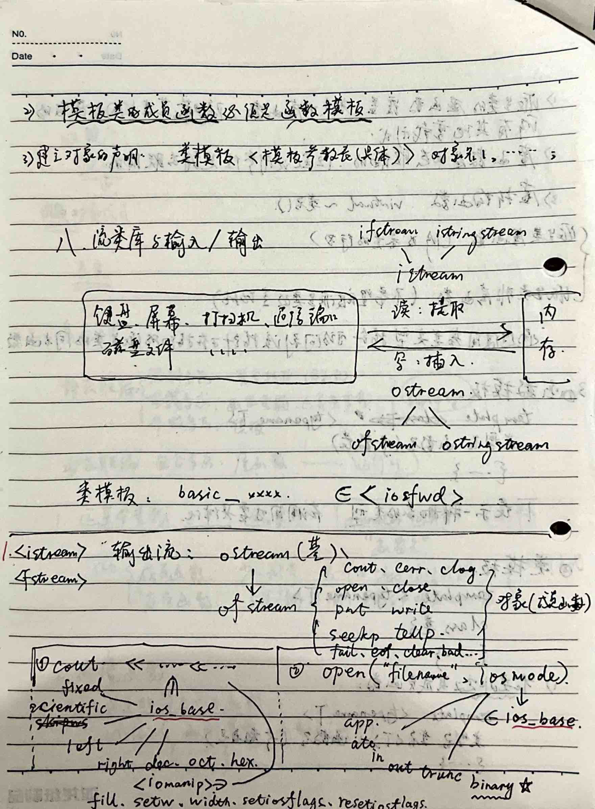

### Chapter: C++
#### Section 1: Variables
1. **Variables**: Values that do not change during the program's execution. - Types: Integer, Real, Character, String, Bit.
2. **Variable Types**: - `auto`: Temporary storage (stack mode). - `static`: Fixed address storage in memory, valid throughout the program's execution. - `extern`: Available in all functions and programs. - `register`: General-purpose registers.
3. **Symbolic Constants**: `const` data type declaration `SymbolName = SymbolValue`.
[Forced Types]: `char`, `short`, `int`, `unsigned`, `long`, `unsigned long`, `float`, `double`.
#### Section 2: Functions
1. **Parameter Passing**: - **Value Passing**: (Unidirectional) - **Reference Passing**: (When calling, it is passed by reference, pointing to the existing object).
2. **Inline Functions**: - The compiler embeds the function call at the point of use, saving parameter passing and control transfers.
3. **Default Parameters**: - Parameters can be defined with default values. From right to left declaration.
### Chapter: Function Overloading
#### 4. Function Overloading: - **Different Parameter Types** - **Different Number of Parameters** - **Implementation of Best Matching**
### Section: Classes and Objects
#### 1. Classes and Objects: - **Abstract Class (Data Abstraction) (Behavior Abstraction)** - **Encapsulation: Encapsulate reusable modules.** - **Inheritance:** - **Polymorphism:**
#### 2. Objects as Instances of Classes
#### 1. Access Control: - **Base Class** | **Base Class** | **Derived Class** - **public** | **public** | **public** - **protected** | **protected** | **protected** - **private** | **private** | **not accessible** - **protected** | **public** | **protected** - **protected** | **protected** | **protected** - **private** | **private** | **not accessible** - **private** | **public** | **private** - **private** | **private** | **not accessible**
### Section: Member Variables and Functions
#### 2. Member Variables and Functions:
### Chapter: Object-Oriented Programming Fundamentals
#### Section 1: Function Declarations
1. **Function Declarations**: - **Return Value Type**: Function name: `void` or `int` (parameter list). `{---}`
2. **Default Parameters**: Function name: `(5` before the parameter list).
3. **Inline Functions**: Function name: `inline` placed within the function body. `inline` declaration: `inline` placed outside the function body.
#### Section 2: Objects
4. **Objects**: - **Class Name**: `ClassName` - **Accessing Object Members**: `ClassName::public member variable (parameter list)`
#### Section 3: Constructor Functions
1. **Constructors**: - **Default Constructor**: When creating an object, the constructor is automatically called. If no constructor is defined, the compiler will generate a default constructor (no action). - **Copy Constructor**: Can be inline, can have parameters, can have default parameters, can be overloaded. - **Member Variables**: The object's memory contains data members, not function members or function code.
2. **Copy Constructor**: - **Copy Constructor**: Each data member's value is copied into the new object. (same class object) - **Copy Constructor**: When creating a new object of the same class, the copy constructor is automatically called. The copy constructor is used to copy the values of the data members into the new object. - **Copy Constructor**: After the copy constructor is executed, the new object is returned.
### Chapter: Object-Oriented Programming Fundamentals
#### Section 1: Constructor and Destructor
1. **Constructor**: - The constructor is a special member function of a class that is automatically called when an object of that class is created. It initializes the object's state and can be overloaded to accept different numbers and types of arguments. - The constructor can be defined as follows: ```cpp class MyClass { public: MyClass(int x, double y) : x(x), y(y) {} int x; double y; }; ``` - The constructor can also be defined to initialize the object's state: ```cpp class MyClass { public: MyClass() : x(0), y(0.0) {} int x; double y; }; ``` - If the constructor is not defined, the compiler will generate a default constructor that initializes all members to their default values.
2. **Destructor**: - The destructor is a special member function of a class that is automatically called when an object of that class is destroyed. It is used to clean up resources and perform any necessary cleanup operations. - The destructor can be defined as follows: ```cpp class MyClass { public: ~MyClass() { // Cleanup code here } }; ``` - The destructor can also be defined to perform specific cleanup operations: ```cpp class MyClass { public: ~MyClass() { // Cleanup code here } }; ``` - If the destructor is not defined, the compiler will generate a default destructor that does nothing.
#### Section 2: Class Composition
1. **Class Composition**: - Class composition is a mechanism where one class contains objects of another class as its members. This allows the class to encapsulate the behavior of the contained objects. - For example, consider a `Car` class that contains an `Engine` object: ```cpp class Engine { public: Engine() {} void start() {} };
class Car { public: Engine engine; Car() {} }; ``` - The `Car` class contains an `Engine` object, and the `Engine` object can be initialized in the constructor of the `Car` class.
2. **Initialization of Data Members**: - Data members of a class can be initialized in the constructor of the class. This is known as member initialization. - For example, consider a `Person` class with a `name` and `age` member variables: ```cpp class Person { public: std::string name; int age; Person(std::string n, int a) : name(n), age(a) {} }; ``` - The `name` and `age` members are initialized in the constructor of the `Person` class.
3. **Destructor Initialization**: - The destructor of a class is called when an object of that class is destroyed. It is used to clean up resources and perform any necessary cleanup operations. - For example, consider a `BankAccount` class with a `balance` member variable: ```cpp class BankAccount { public: int balance; BankAccount(int b) : balance(b) {} ~BankAccount() { // Cleanup code here } }; ``` - The `balance` member variable is initialized in the constructor of the `BankAccount` class, and the destructor is called when the object is destroyed.
#### Section 3: Constructor and Destructor Order
1. **Constructor and Destructor Order**: - The order of constructors and destructors is important in object-oriented programming. The constructor is called in the order of the object's creation, and the destructor is called in the reverse order of the object's destruction. - For example, consider a `Shape` class with a `color` member variable: ```cpp class Shape { public: std::string color; Shape(std::string c) : color(c) {} ~Shape() { // Cleanup code here } }; ``` - The `color` member variable is initialized in the constructor of the `Shape` class, and the destructor is called when the object is destroyed.
2. **Destructor Cleanup**: - The destructor is called when an object of a class is destroyed. It is used to clean up resources and perform any necessary cleanup operations. - For example, consider a `File` class with a `filename` member variable: ```cpp class File { public: std::string filename; File(std::string f) : filename(f) {} ~File() { // Cleanup code here } }; ``` - The `filename` member variable is initialized in the constructor of the `File` class, and the destructor is called when the object is destroyed.
### Chapter: C++ Programming Structure
#### Section 1: Scope of Variables
1. **Scope of Variables:** - **Local Scope:** Variables declared within a function or block have local scope. They are only accessible within the function or block in which they are defined. - **Function Scope:** Variables declared within a function have function scope. They are accessible within the function but not outside of it. - **Class Scope:** Variables declared within a class have class scope. They are accessible within the class but not outside of it. - **Global Scope:** Variables declared outside of any function or class have global scope. They are accessible throughout the entire program.
#### Section 2: Accessibility
2. **Accessibility:** - Variables can be made accessible within a class or function by declaring them as `public`, `protected`, or `private`. - `public` variables can be accessed from outside the class or function. - `protected` variables can be accessed within the class or derived classes. - `private` variables can only be accessed within the class or function in which they are declared.
#### Section 3: Lifetime
3. **Lifetime:** - **Static Lifetime:** Variables declared with the `static` keyword have static lifetime. They retain their values between function calls and are accessible throughout the program. - **Dynamic Lifetime:** Variables declared without the `static` keyword have dynamic lifetime. They are created and destroyed during the execution of the program and are not accessible between function calls.
#### Section 4: Inheritance
4. **Inheritance:** - **Base Class:** A base class is a class that can be derived from another class. - **Derived Class:** A derived class is a class that inherits properties and methods from a base class. - **Virtual Functions:** Virtual functions allow derived classes to override the behavior of base class functions. This is achieved using the `virtual` keyword.
#### Section 5: Polymorphism
5. **Polymorphism:** - **Virtual Functions:** Virtual functions allow derived classes to override the behavior of base class functions. This is achieved using the `virtual` keyword. - **Abstract Classes:** Abstract classes are classes that cannot be instantiated but can be derived from. They can contain abstract methods that must be implemented by derived classes.
#### Section 6: Exception Handling
6. **Exception Handling:** - **try-catch Block:** The `try-catch` block is used to handle exceptions. The `try` block contains the code that may throw an exception, and the `catch` block handles the exception. - **throw Statement:** The `throw` statement is used to throw an exception. It can throw any object, including custom exceptions.
#### Section 7: Templates
7. **Templates:** - **Template Functions:** Template functions are functions that can work with different data types. They are defined using the `template` keyword. - **Template Classes:** Template classes are classes that can work with different data types. They are defined using the `template` keyword.
#### Section 8: Lambda Functions
8. **Lambda Functions:** - **Anonymous Functions:** Lambda functions are anonymous functions that can be defined inline. They are defined using the `lambda` keyword. - **Capturing Variables:** Lambda functions can capture variables from the surrounding scope. They can capture variables by value, by reference, or by const reference.
#### Section 9: Smart Pointers
9. **Smart Pointers:** - **`std::unique_ptr`:** `std::unique_ptr` is a smart pointer that manages the lifetime of a dynamically allocated object. It ensures that the object is deleted when the pointer goes out of scope. - **`std::shared_ptr`:** `std::shared_ptr` is a smart pointer that manages the lifetime of a dynamically allocated object. It ensures that the object is deleted when the last shared pointer goes out of scope.
#### Section 10: References
10. **References:** - **References:** References are variables that refer to another variable. They are declared using the `&` operator. References cannot be reassigned to point to a different variable. - **Const References:** Const references are references that cannot be reassigned to point to a different variable. They are declared using the `const` keyword.
#### Section 11: Pointers
11. **Pointers:** - **Dynamic Allocation:** Pointers can be dynamically allocated using the `new` operator. The allocated memory can be deallocated using the `delete` operator. - **Static Allocation:** Pointers can be statically allocated using the `new` operator. The allocated memory can be deallocated using the `delete` operator.
#### Section 12: Memory Management
12. **Memory Management:** - **Heap Allocation:** Memory can be allocated on the heap using the `new` operator. The allocated memory can be deallocated using the `delete` operator. - **Stack Allocation:** Memory can be allocated on the stack using the `new` operator. The allocated memory can be deallocated using the `delete` operator.
#### Section 13: Standard Library
13. **Standard Library:** - **Containers:** The C++ Standard Library provides a variety of containers, such as `std::vector`, `std::list`, `std::map`, and `std::set`. These containers provide efficient storage and retrieval of data. - **Algorithms:** The C++ Standard Library provides a variety of algorithms, such as `std::sort`, `std::find`, and `std::copy`. These algorithms provide efficient manipulation of data. - **Streams:** The C++ Standard Library provides a variety of streams, such as `std::cin` and `std::cout`. These streams provide efficient input and output of data.
#### Section 14: Exception Safety
14. **Exception Safety:** - **Guaranteed Exception Safety:** A function is guaranteed exception safe if it either does not throw exceptions or throws exceptions that can be caught. - **Basic Exception Safety:** A function is basic exception safe if it either does not throw exceptions or throws exceptions that can be caught and handled. - **Strong Exception Safety:** A function is strong exception safe if it either does not throw exceptions or throws exceptions that can be caught and handled, and the function can be rolled back to a consistent state if an exception is thrown.
#### Section 15: Performance
15. **Performance:** - **Optimization:** Optimization is the process of improving the performance of a program. It can be achieved by using efficient algorithms, data structures, and code optimization techniques. - **Profiling:** Profiling is the process of measuring the performance of a program. It can be achieved using tools such as `gprof` and `valgrind`.
#### Section 16: Best Practices
16. **Best Practices:** - **Code Style:** Code should be written in a consistent and readable style. It should be well-documented and follow the guidelines of the C++ Standard Library. - **Error Handling:** Error handling should be implemented using the `try-catch` block. Exceptions
### Chapter: Object-Oriented Programming
#### Section: Static Members
5. **Static Members:** - **Static Members:** Declared with the `static` keyword. They have a static lifetime and can be accessed via the class name. Each class has its own copy of static members. - **Static Member Functions:** Access the class's static data members and static member functions. They manage data shared among objects, independent of any object.
#### Section: Friend Functions and Classes
6. **Friend Functions:** - **Friend Functions:** Functions that can access private and protected members of a class. - **Friend Classes:** A class that has all its member functions declared as friends of another class. Friends can access private and protected members of the class.
#### Section: Const References
7. **Const References:** - **Const References:** The referenced object cannot be modified. Const references cannot be reassigned. - **Const References in Function Parameters:** The referenced object cannot be modified. Const references can be used to pass objects by const reference. - **Const Objects:** Must be initialized. Const objects cannot be modified. - **Const References in Return Types:** Const references can be returned. The return type must be const.
#### Section: Const Members
8. **Const Members:** - **Const Members:** Declared with the `const` keyword. They cannot be modified.
### Chapter: Object-Oriented Programming Fundamentals
#### Section 1: Object-Oriented Programming Concepts
1. **Data Members**: - **Data Members**: These are variables that store data within an object. They can be either public or private. - **Accessing Data Members**: Data members can be accessed using dot notation (object.member).
2. **Member Functions**: - **Member Functions**: These are functions that operate on the data members of an object. They can be either public or private. - **Accessing Member Functions**: Member functions can be accessed using dot notation (object.memberFunction()).
3. **Static Members**: - **Static Members**: These are members that belong to the class rather than to any specific object. They can be accessed using the class name (ClassName.member).
4. **Static Functions**: - **Static Functions**: These are functions that operate on static members of a class. They can be accessed using the class name (ClassName.staticFunction()).
#### Section 2: Object-Oriented Programming in Practice
1. **Class Definition**: - **Class Definition**: A class is a blueprint for creating objects. It defines the properties and methods that an object of the class will have. - **Example**: ```cpp class MyClass { public: int dataMember; void memberFunction(); }; ```
2. **Object Creation**: - **Object Creation**: Objects are instances of a class. They are created using the `new` keyword. - **Example**: ```cpp MyClass myObject = new MyClass(); ```
3. **Object Destruction**: - **Object Destruction**: Objects are destroyed using the `delete` keyword. - **Example**: ```cpp delete myObject; ```
4. **Dynamic Memory Allocation**: - **Dynamic Memory Allocation**: Objects can be dynamically allocated and deallocated at runtime. - **Example**: ```cpp MyClass* myObject = new MyClass(); delete myObject; ```
5. **Static Members and Static Functions**: - **Static Members**: These are members that belong to the class rather than to any specific object. They can be accessed using the class name (ClassName.member). - **Static Functions**: These are functions that operate on static members of a class. They can be accessed using the class name (ClassName.staticFunction()).
6. **Class Inheritance**: - **Class Inheritance**: Inheritance allows a new class to inherit properties and methods from an existing class. - **Example**: ```cpp class DerivedClass : public BaseClass { public: void derivedFunction(); }; ```
7. **Polymorphism**: - **Polymorphism**: Polymorphism allows objects of different classes to be treated as objects of a common base class. - **Example**: ```cpp class BaseClass { public: virtual void baseFunction() = 0; };
class DerivedClass : public BaseClass { public: void baseFunction() override { // Implementation } }; ```
8. **Encapsulation**: - **Encapsulation**: Encapsulation is the practice of hiding the internal details of an object and exposing only the necessary interface. - **Example**: ```cpp class MyClass { private: int privateData; public: void setPrivateData(int value) { privateData = value; } int getPrivateData() const { return privateData; } }; ```
9. **Abstraction**: - **Abstraction**: Abstraction is the process of hiding unnecessary details and exposing only the essential features of an object. - **Example**: ```cpp class Shape { public: virtual double area() = 0; };
class Circle : public Shape { private: double radius; public: double area() override { return M_PI * radius * radius; } }; ```
10. **Inheritance and Polymorphism**: - **Inheritance**: Inheritance allows a new class to inherit properties and methods from an existing class. - **Polymorphism**: Polymorphism allows objects of different classes to be treated as objects of a common base class. - **Example**: ```cpp class BaseClass { public: virtual void baseFunction() = 0; };
class DerivedClass : public BaseClass { public: void baseFunction() override { // Implementation } }; ```
11. **Static Members and Static Functions**: - **Static Members**: These are members that belong to the class rather than to any specific object. They can be accessed using the class name (ClassName.member). - **Static Functions**: These are functions that operate on static members of a class. They can be accessed using the class name (ClassName.staticFunction()).
12. **Class Inheritance**: - **Class Inheritance**: Inheritance allows a new class to inherit properties and methods from an existing class. - **Example**: ```cpp class DerivedClass : public BaseClass { public: void derivedFunction(); }; ```
13. **Polymorphism**: - **Polymorphism**: Polymorphism allows objects of different classes to be treated as objects of a common base class. - **Example**: ```cpp class BaseClass { public: virtual void baseFunction() = 0; };
class DerivedClass : public BaseClass { public: void baseFunction() override { // Implementation } }; ```
14. **Encapsulation**: - **Encapsulation**: Encapsulation is the practice of hiding the internal details of an object and exposing only the necessary interface. - **Example**: ```cpp class MyClass { private: int privateData; public: void setPrivateData(int value) { privateData = value; } int getPrivateData() const { return privateData; } }; ```
15. **Abstraction**: - **Abstraction**: Abstraction is the process of hiding unnecessary details and exposing only the essential features of an object. - **Example**: ```cpp class Shape { public: virtual double area() = 0; };
class Circle : public Shape { private: double radius; public: double area() override { return M_PI * radius * radius; } }; ```
16. **Inheritance and Polymorphism**: - **Inheritance**: Inheritance allows a new class to inherit properties and methods from an existing class. - **Polymorphism**: Polymorphism allows objects of different classes to be treated as objects of a common base class. - **Example**: ```cpp class BaseClass { public: virtual void baseFunction() = 0
### Chapter: Dynamic Arrays and Inheritance
#### Section 1: Dynamic Arrays
- **Dynamic Arrays (Arrays):** ```cpp new 类型名 [下标1] [下标2] ... n个 ``` - **Pointer Arrays (Pointers):** ```cpp 类型名 (*p) [下标2] ... n-1个 ``` - **Pointer to Pointer Arrays:** ```cpp p指向此类型的多维数组. delete [p]; ```
- **Array of Pointers:** ```cpp 对象 成拷贝: 两个数组共用内存区，导致delete时在同一内存上释放了两次 浅拷贝: 创建一块新内存区，两次释放不同内存区，要自己写! ```
#### Section 2: Inheritance
1. **Declaration:** ```cpp class 派生类名: 继承方式 基类名1, 基类名2 ... { ... }; ``` - **Multiple Inheritance:** ```cpp 多继承 ``` - **Single Inheritance:** ```cpp 单继承 ```
2. **Rules:** ```cpp 派生类除构造函数和析构函数之外的所有成员（包括copy constructor）要加入新的构造函数和析构函数。
### Type Compatibility Rule: Any problem that can be solved by the base class can be solved by a public derived class.
- **Base Class Objects**: Can be assigned to base class objects. - **Base Class Objects**: Can be initialized with base class objects. → Inheritance (derived class) is involved. - **Base Class Objects**: Can be assigned to derived class objects.
### 3. Derived Class Constructors and Destructors: - **Default Constructor**: Only initializes the new data members of the derived class. - If you want to initialize the members inherited from the base class, you need to write a constructor. - Destructors are similar.
#### 1. Constructor Sequence: - Call the base class constructor (left to right). - Call the derived class constructor (left to right). Only base class data members. - **Derived Class Constructor**: ```cpp DerivedClassName::DerivedClassName(ParametersList) : BaseClassName(ParametersList1), ..., BaseClassNameN(ParametersListN), DerivedClassNameMember1(ParametersList1), ..., DerivedClassNameMemberM(ParametersListM) {} ```
#### 2. Destructor Sequence: - Call the base class destructor (left to right).
### Chapter: Object-Oriented Programming
#### Section 3: Object-Oriented Concepts
**3.1 Inheritance**
- **Order:** The order of inheritance is from the base class to the derived class. - **Base Class:** The base class is the class from which the derived class inherits. - **Derived Class:** The derived class is the class that inherits from the base class. - **Member Variables:** The member variables of the base class are accessible in the derived class. - **Base Class:** The base class is the class that is inherited from. - **Polymorphism:** Polymorphism allows objects of different classes to be treated as objects of a common base class.
#### Section 7: Polymorphism
- **Static Overloading:** Static overloading allows multiple functions with the same name but different parameters to be defined in the same class. - **Dynamic Overloading:** Dynamic overloading allows multiple functions with the same name but different parameters to be defined in the same class. - **Virtual Functions:** Virtual functions are functions that can be overridden in derived classes. - **Virtual Functions:** Virtual functions are declared with the `virtual` keyword. - **Virtual Functions:** Virtual functions are declared with the `virtual` keyword. - **Virtual Functions:** Virtual functions are declared with the `virtual` keyword. - **Virtual Functions:** Virtual functions are declared with the `virtual` keyword. - **Virtual Functions:** Virtual functions are declared with the `virtual` keyword. - **Virtual Functions:** Virtual functions are declared with the `virtual` keyword. - **Virtual Functions:** Virtual functions are declared with the `virtual` keyword. - **Virtual Functions:** Virtual functions are declared with the `virtual` keyword. - **Virtual Functions:** Virtual functions are declared with the `virtual` keyword. - **Virtual Functions:** Virtual functions are declared with the `virtual` keyword. - **Virtual Functions:** Virtual functions are declared with the `virtual` keyword. - **Virtual Functions:** Virtual functions are declared with the `virtual` keyword. - **Virtual Functions:** Virtual functions are declared with the `virtual` keyword. - **Virtual Functions:** Virtual functions are declared with the `virtual` keyword. - **Virtual Functions:** Virtual functions are declared with the `virtual` keyword. - **Virtual Functions:** Virtual functions are declared with the `virtual` keyword. - **Virtual Functions:** Virtual functions are declared with the `virtual` keyword. - **Virtual Functions:** Virtual functions are declared with the `virtual` keyword. - **Virtual Functions:** Virtual functions are declared with the `virtual` keyword. - **Virtual Functions:** Virtual functions are declared with the `virtual` keyword. - **Virtual Functions:** Virtual functions are declared with the `virtual` keyword. - **Virtual Functions:** Virtual functions are declared with the `virtual` keyword. - **Virtual Functions:** Virtual functions are declared with the `virtual` keyword. - **Virtual Functions:** Virtual functions are declared with the `virtual` keyword. - **Virtual Functions:** Virtual functions are declared with the `virtual` keyword. - **Virtual Functions:** Virtual functions are declared with the `virtual` keyword. - **Virtual Functions:** Virtual functions are declared with the `virtual` keyword. - **Virtual Functions:** Virtual functions are declared with the `virtual` keyword. - **Virtual Functions:** Virtual functions are declared with the `virtual` keyword. - **Virtual Functions:** Virtual functions are declared with the `virtual` keyword. - **Virtual Functions:** Virtual functions are declared with the `virtual` keyword. - **Virtual Functions:** Virtual functions are declared with the `virtual` keyword. - **Virtual Functions:** Virtual functions are declared with the `virtual` keyword. - **Virtual Functions:** Virtual functions are declared with the `virtual` keyword. - **Virtual Functions:** Virtual functions are declared with the `virtual` keyword. - **Virtual Functions:** Virtual functions are declared with the `virtual` keyword. - **Virtual Functions:** Virtual functions are declared with the `virtual` keyword. - **Virtual Functions:** Virtual functions are declared with the `virtual` keyword. - **Virtual Functions:** Virtual functions are declared with the `virtual` keyword. - **Virtual Functions:** Virtual functions are declared with the `virtual` keyword. - **Virtual Functions:** Virtual functions are declared with the `virtual` keyword. - **Virtual Functions:** Virtual functions are declared with the `virtual` keyword. - **Virtual Functions:** Virtual functions are declared with the `virtual` keyword. - **Virtual Functions:** Virtual functions are declared with the `virtual` keyword. - **Virtual Functions:** Virtual functions are declared with the `virtual` keyword. - **Virtual Functions:** Virtual functions are declared with the `virtual` keyword. - **Virtual Functions:** Virtual functions are declared with the `virtual` keyword. - **Virtual Functions:** Virtual functions are declared with the `virtual` keyword. - **Virtual Functions:** Virtual functions are declared with the `virtual` keyword. - **Virtual Functions:** Virtual functions are declared with the `virtual` keyword. - **Virtual Functions:** Virtual functions are declared with the `virtual` keyword. - **Virtual Functions:** Virtual functions are declared with the `virtual` keyword. - **Virtual Functions:** Virtual functions are declared with the `virtual` keyword. - **Virtual Functions:** Virtual functions are declared with the `virtual` keyword. - **Virtual Functions:** Virtual functions are declared with the `virtual` keyword. - **Virtual Functions:** Virtual functions are declared with the `virtual` keyword. - **Virtual Functions:** Virtual functions are declared with the `virtual` keyword. - **Virtual Functions:** Virtual functions are declared with the `virtual` keyword. - **Virtual Functions:** Virtual functions are declared with the `virtual` keyword. - **Virtual Functions:** Virtual functions are declared with the `virtual` keyword. - **Virtual Functions:** Virtual functions are declared with the `virtual` keyword. - **Virtual Functions:** Virtual functions are declared with the `virtual` keyword. - **Virtual Functions:** Virtual functions are declared with the `virtual` keyword. - **Virtual Functions:** Virtual functions are declared with the `virtual` keyword. - **Virtual Functions:** Virtual functions are declared with the `virtual` keyword. - **Virtual Functions:** Virtual functions are declared with the `virtual` keyword. - **Virtual Functions:** Virtual functions are declared with the `virtual` keyword. - **Virtual Functions:** Virtual functions are declared with the `virtual` keyword. - **Virtual Functions:** Virtual functions are declared with the `virtual` keyword. - **Virtual Functions:** Virtual functions are declared with the `virtual` keyword. - **Virtual Functions:** Virtual functions are declared with the `virtual` keyword. - **Virtual Functions:** Virtual functions are declared with the `virtual` keyword. - **Virtual Functions:** Virtual functions are declared with the `virtual` keyword. - **Virtual Functions:** Virtual functions are declared with the `virtual` keyword. - **Virtual Functions:** Virtual functions are declared with the `virtual` keyword. - **Virtual Functions:** Virtual functions are declared with the `virtual` keyword. - **Virtual Functions:** Virtual functions are declared with the `virtual` keyword. - **Virtual Functions:** Virtual functions are declared with the `virtual` keyword. - **Virtual Functions:** Virtual functions are declared with the `virtual` keyword. - **Virtual Functions:** Virtual functions are declared with the `virtual` keyword
1. **Virtual Functions**: - **1) Virtual functions override the base class's virtual functions, hiding all other overloads of the base class.** - **2) Virtual functions are dynamically bound, but the function pointer is statically bound.** - **3) Virtual destructor: virtual ~ClassName();**
2. **Virtual Functions**: - **1) Virtual functions override the base class's behavior.** - **2) Virtual functions are not intended to be overridden by derived classes.** - **3) Through the use of base type pointers, you can access the virtual function of the derived class pointed to by the pointer.**
3. **Function Templates**:
- **template
4. **Class Templates**:
- **template
### Chapter: Stream Library and Input/Output
#### Section: Stream Library and Input/Output
Streams are essential in programming for handling input and output operations. The stream library in C++ provides a powerful and flexible framework for managing data streams. Streams can be categorized into two types: input streams and output streams. The basic stream classes in the stream library include `iostream`, `fstream`, `sstream`, and `iomanip`.
1. **iostream**: This is a basic input stream class that provides basic input and output operations. It is derived from the `ios` class and is used for standard streams like `cin` (standard input), `cout` (standard output), and `cerr` (standard error).
2. **fstream**: This is a file stream class that allows you to read and write data to and from files. It is derived from the `fstream` class and provides methods for opening, closing, and manipulating files.
3. **sstream**: This is a string stream class that allows you to perform input and output operations on strings. It is derived from the `sstream` class and provides methods for manipulating strings.
4. **iomanip**: This is a header file that provides manipulators for stream formatting. Manipulators are functions that can be used to modify the behavior of streams. Some common manipulators include `setw`, `setprecision`, `setfill`, and `setiosflags`.
#### Example Usage
```cpp
#include
int main() { // Using iostream for standard streams std::cout << "Hello, World!" << std::endl; // Output: Hello, World!
// Using fstream for file operations std::ofstream file("example.txt"); file << "This is a test file." << std::endl; file.close();
// Using stringstream for string operations std::stringstream ss; ss << "This is a test string." << std::endl; std::string str = ss.str(); std::cout << str << std::endl; // Output: This is a test string.
// Using iomanip for stream formatting std::cout << std::setw(10) << "Number" << std::endl; std::cout << std::setw(10) << 123456 << std::endl; std::cout << std::setw(10) << std::setprecision(2) << 123.456789 << std::endl;
return 0; } ```
This chapter covers the basic concepts and usage of streams in C++, including the different types of streams and how to use them for various input and output operations. It also introduces the `iomanip` header file and its manipulators for stream formatting.

### Chapter: File I/O in C++
#### Section: Basic File Operations
1. **putc('A')**: - This function writes a single character to the output stream. The character 'A' is written to the output stream.
2. **close()**: - This function closes the file stream. It must be used to close the file after all operations are completed. It is a member function of the file stream class.
3. **write((char*)&x, int size)**: - This function writes a block of memory to the output stream. The memory location `x` and the number of bytes to write are specified. The function returns the number of bytes actually written.
4. **seekp(int)**: - This function sets the position of the output stream to the specified position. The position is specified in bytes from the beginning of the file.
5. **eof()**: - This function checks if the end of the file has been reached. If the end of the file has been reached, it returns a non-zero value. If not, it returns zero.
#### Section: Input Streams
- **
- **
- **cin**: - The `cin` object is used for input operations. It is a stream object that reads from the standard input device.
- **ios_base::in**: - This is a member of the `ios_base` class and is used to set the input mode for the stream.
- **ios_base::binary**: - This is a member of the `ios_base` class and is used to set the binary mode for the stream.
- **get**: - This function reads a character from the input stream. It returns the character read.
- **getline**: - This function reads a line of text from the input stream. It returns the number of characters read, including the newline character.
- **good()**: - This function checks if the input operation was successful. If the operation was successful, it returns a non-zero value. If not, it returns zero.
#### Section: File Operations
1. **close()**: - This function closes the file stream. It must be used to close the file after all operations are completed. It is a member function of the file stream class.
2. **read((char*)&x, int size)**: - This function reads a block of memory from the input stream. The memory location `x` and the number of bytes to read are specified. The function returns the number of bytes actually read.
3. **seekg(int)**: - This function sets the position of the input stream to the specified position. The position is specified in bytes from the beginning of the file.
### Chapter: Exception Handling
#### Exception Handling Syntax: - **try { ... } throw(表达式) ... }** - **catch (异常类型声明) { 处理办法 }** - **catch (异常类型声明) { 处理办法 }**
#### Example: - **catch (...) { 处理所有异常 }** - Once a `catch` block receives an exception, it exits the `try` block and executes the next statement. - In the `catch` block, you can catch all exceptions of a specific type. - **void fun() throw(A, B, C, D)** - If not specified, it can throw any type of exception. - **void fun()** - If not specified, it can throw any type of exception.
#### Notes: - The `catch` block can handle exceptions of any type. - If not specified, it can throw any type of exception.